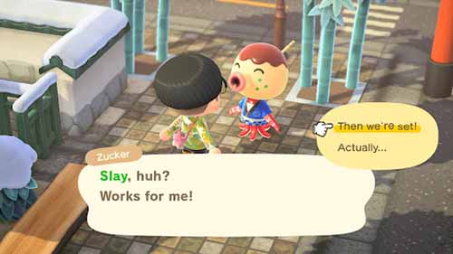

I never realized that game design related so much with UI design. One example is the recognition of easy-to-reach spots. Mobile apps also prioritize usability, such as having call to actions having a long width so that they're easier to reach. The article kinda reminded me of why I like UI/UX so much. I used to and still play a lot of games, and part of that experience involves looking at the game UI. Some games I play have a seamless UI that makes sense and is easy to understand and access. On the other hand, some games have bad UI that confuses me. The latter sticks in my memory a lot more, so I guess one motivation behind wanting to be a UI/UX designer is wanting to learn more about the UI/UX research process and try to prove bad UI is completely avoidable.
Visual Thinking Analysis

Andre Lam, 2023
To me, video games are an avenue to temporarily escape the stress of reality, so I like to frequently play them whenever I have the opportunity or need to. I've played through many games as a way to distress, have leisure time, and sometimes even spend time with friends. I want this project to express the role of video games in my life.
For this particular image, I just love how nonsensical and goofy you can be in Animal Crossing: New Horizons. In the game, you're allowed to customize your experience as much as you want: how you decorate your island, the type of villagers you want on your island, even the catchphrases you teach to the NPCs of the game. Here you can see I taught a villager to say “slay” as their catchphrase. The ability to self-insert my own influences into the game really resonated with me.
Kathryn Grace Corpuz, 2023
This image is a showcase of a variety of food from a culture I can’t tell, potentially Filipino? The most interesting part of the picture is how colorful and distinct every food item is. From the bright and shiny orange rolls to the minty and fresh jelly substance, the colorful range of food makes me hungry. Additionally, the fact that these are all foods I’m not familiar with aside from the sticky rice makes me want to try it even more.
What’s obvious from this post is that it’s most likely a display of the person’s culture since all of these different foods yet grouped up together indicates that there’s some sort of connection between all of them. As for what’s the most mysterious, it’s that dish on the far left. The other dishes look comparable to my culture’s food (Chinese). They resemble buns, tofu pudding, sticky rice dumplings, egg rolls, and some sort of milk drink on the right, but I don’t know a counterpart for the mysterious dish.
Visual Thinking Strategies Research
The best way to get users' attention is the use of imagery; pictures can convey the same amount of information as a paragraph but also have a form of visual appeal and interest. But it can't be just any graphic: the image has to have a hidden meaning or story to it that users must take a closer look to find. This one value is something I'm focusing on for my Every Picture project. I want to communicate mainly with not just text but instead with imagery. However, I think I want to make the imagery a little bit confusing. Another topic that the article inspires my website is that ideally my website will force users to ask observation questions and experiment with how to navigate through the website. By doing so they'll immerse themselves in the narrative and engage more with the material I will convey. In addition to this, since the website will mainly represent part of my interests, I hope other people will relate to it and help start conversations based on those potential similarities.
A website I found that utilizes imagery in a unique way is Sergio Schiaffino's portfolio. His use of imagery stands out in comparison to other portfolios. His usage of designing his portfolio is a callback to retro computers with his website being divided to desktop icons and the navigation bar being the top bar of an old macOS. This design choice isn't clear in why it was specifically designed that way; it forces users to ask observation questions. Why exactly did Schiaffino design the website the way it is? Does he like retro computers? Questions like these help engage users more with the website and help them get to know the designer better.
Overlay Design Pattern Research
I read Naema Baskanderi's Best Practices for Modals / Overlays / Dialog Windows and what I've learned is that an overlay is a great tool if you want to grab a user's attention for a brief moment. This pattern combined with the lightbox effect where the main page is blackened out is a powerful tool, but misusing it can hinder the user flow of the website which can damper user experience. Similar to form design, the best practices for overlay design were concepts I've already seen in action. Seeing the actual justifications behind the concepts however was helpful to know. Since I'm still focused on learning basic web design, it's pretty common to forget that the end goal is creating useful web design that provides a smooth and logical user experience.
Best Practices for Form Design
A lot of the content the article discusses were details I already knew or had observed in multiple websites, but I never knew about the specific reasonings behind each practice. One practice that surprised me the most was the stigma behind inline labels for forms. I always thought that the subtle label inside the box looked aesthetically pleasing, but I never considered the user experience behind the practice and how it might be a point of frustration for users. Same thing with asking for sensitive information as people are wary of giving away personal information unless we give them a valid explanation and reason. This was a good reminder that we should always think about who will consume our design rather than tunnel visioning through our perspectives as designers only.
A good website I consider to exemplify good practices is Miro. Although it does have an inline label, when you select it with your mouse the label smoothly transitions over to the top of the form box which is the best of both worlds.